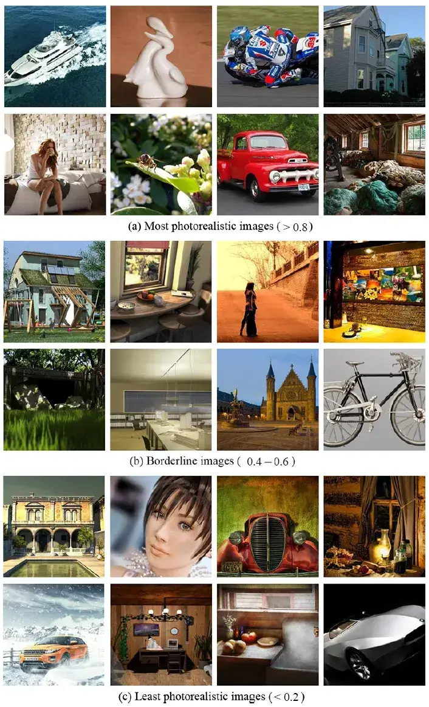
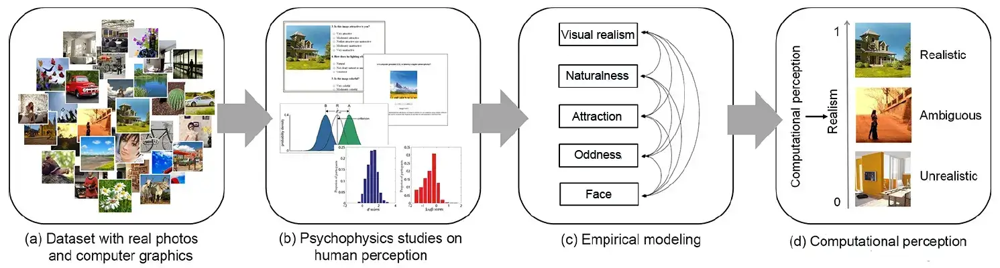
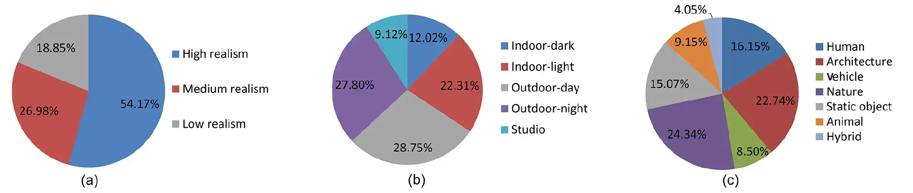
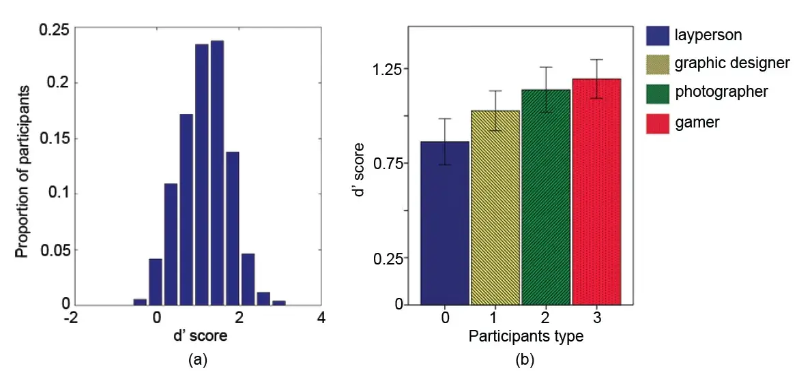
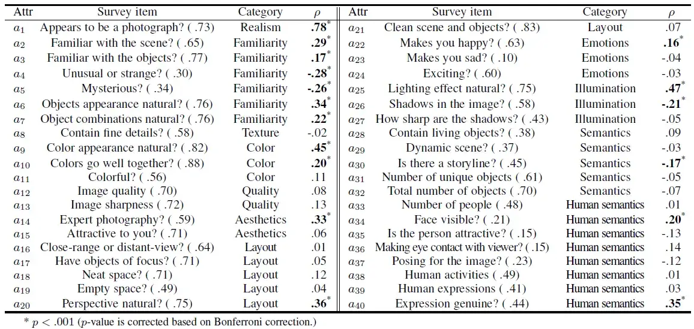
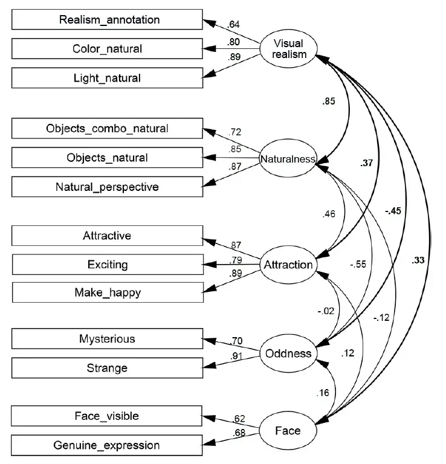

资源
正文
Abstract
**视觉真实性的定义是图像给人的感觉像照片而不是计算机生成的。**评估视觉真实性在诸如计算机图形渲染和照片修饰的应用中很重要。然而，当前的真实感评价方法要么依赖于劳动密集型的人类判断，要么依赖于大量比较渲染结果与参考图像的自动化算法。我们开发了一个基于计算的框架来预测视觉真实性以克服这些限制。首先，我们构建了包含全面人类注释属性的基准数据集（共 2520 张图片）。通过统计建模分析该数据，我们识别出对视觉真实感最重要的图像属性。我们提出了一种基于经验的方法（由我们的统计模型指导）以及 CNN 学习特征来预测图像的视觉真实感。我们的框架具有以下优点：
- 它创建了一个可解释且简洁的经验模型，描述了人类感知的视觉真实感；
- 它将计算特征链接到人类图像感知的潜在因素。
关键词——视觉真实感，人类心理物理学，统计建模，卷积神经网络。
1 Introduction
视觉真实感对于计算机图形学（CG）渲染、图像取证和照片润饰非常重要。预测人类对视觉真实感的感知有很多应用，例如虚拟现实娱乐中的 CG 质量评估和沉浸水平控制。目前，研究人员通过两种方式评估视觉真实感：自动计算预测和主观人类判断。
对于自动预测，使用基于参考的图像质量指标（IQMs）来定量计算全局照明和伪影引起的畸变。例如，均方误差（MSE）和结构相似性指数被用于给定理想参考图像的情况下进行计算。基于 IQMs 的算法是客观的，并且通常在预测 CG 质量方面非常有效，但它们针对特定类型的伪影进行了调整，因此难以推广到新数据中。此外，在许多情况下，理想的参考图像不可用。另外，IQMs 很少与人类感知相对比评估。
对于主观的人类判断，一些研究人员进行了心理物理学实验，以测量与原始图像相比，他们渲染的图像/场景在视觉上的真实性。这种评估通常是劳动密集型的，因为它需要足够数量的参与者和刺激来证实研究结果。此外，需要注意可能引入主观偏见的因素，如实验环境、图像呈现和参与者特征。
因此，对于利用人类判断进行视觉真实性的方法学而言，关键瓶颈是劳动力成本，而自动计算预测通常受限于参考图像的依赖性。我们的目标是了解人类如何感知视觉真实性，并将这种理解应用于计算模型中。为了实现这一目标，我们创建了一个全面的数据集，即 Visual Realism Dataset，其中每张图片都有一个经验主义的真实感评分以及广泛的属性标签（见图 1 和表 1）。基于该数据集，我们开发了由图像真实感评级支持的现实评估计算模型，而不是通过检测图像伪像的工作模式。图 2 展示了我们框架的细节。首先，我们使用密集的人类注释构建基准数据集。然后，我们分析人类数据的心理测量学和信号检测理论。统计分析表明，人类数据中有五个潜在因素，我们将它们标记为“真实”，“自然”，“吸引力”，“奇怪”和“脸”。根据这些因素的相关结构，我们计算了对其他视觉感知维度的关系。我们开发了两种特征：一种是基于我们对人类数据的实证建模，另一种是无监督学习得到的特征，然后比较其性能与已建立的最佳替代品。我们进一步使用华盛顿三维场景数据集来评估我们特征的一般化能力和数据。

来自视觉真实数据集的不同真实度级别的图像。在每一行中，左边的两个是计算机生成的，而右边的是照片。括号中的数字表示真实度评分（参与者将每张图片评为照片而不是 CG 的比例）
我们将这项工作的主要贡献总结如下：
- 我们建立了一个新的基准数据集——Visual Real-ism 数据集——用于研究视觉现实主义。该数据集由各种 CG 和照片图像组成，每张图像都有人类标记的视觉真实感分数和人类注释的属性。基准数据集和代码可供公众用于研究目的。图 1 显示了我们在真实感分数范围内采样的数据集中的示例图像。
- 我们开发了实用的、无参考的计算模型来预测视觉真实感。我们提出了基于经验的特征，这些特征是由人类感知的特征驱动的，因为它与视觉现实主义有关。我们还通过在视觉现实主义数据集上微调 CNN 模型来生成 CNN 学习特征。我们的实验表明，我们基于经验和 CNN 学习的特征都优于其他最先进的方法。在另一个数据集上的实验证明了我们基于经验的特征和数据集的普遍性。
- 我们介绍了一种策略，用于识别与人类视觉真实感感知相关的图像属性。我们对人类标注的数据进行了探索性因素分析，然后进行了验证性因子分析，从而形成了人类对数字图像的多维感知的潜在结构。
- 我们发现现实主义感知受到观察者特征的影响。基于使用信号检测理论的心理物理学分析，我们发现“专业知识效应”、扩展到对一般场景的现实主义感知。我们报告说，观众的性别也会影响现实主义感知。

我们的框架概述。首先，我们创建了一个包含真实照片和计算机图形的数据库（a）。其次，我们进行了心理物理学实验和信号检测理论分析以了解人类对现实感的认知（b）。然后，我们进行因素分析来实证建模人类感知（c）。最后，我们设计了计算机算法来预测视觉现实性（d）。
当前的研究在我们之前的工作基础上进行了根本性的改进，并且带来了新的贡献。以上总结的四个贡献中，（4）是当前工作中的全新内容。（1）之前只对基准数据集的部分标注了属性，而目前整个数据集都带有属性标注。（2）我们扩展了基于经验特征的工作，并调查了 CNN 学习的新特征与 CNN 模型。此外，我们的实验还扩展到一个新的数据集来测试我们特征和数据的一般性。（3）我们的新策略相对于之前的算法有显著的提升。之前的贪婪特征选择方法是由最大化回归目标函数驱动的，而现在我们应用探索性和确认性因素分析于整个人类属性集合上，允许更广泛的任务，如回归和二元分类。
本文余下的部分组织如下：第 2 节介绍相关工作；第 3 节介绍如何构建我们的数据集并进行心理学数据分析和实证建模；第 4 节描述我们的计算模型，并评估它们在 Visual Realism 数据集上的性能以及在华盛顿 3D 场景数据集上的泛化能力；最后，在第 5 节中，我们将重点放在主要发现、局限性和潜在未来方向上。
2 Related Works
我们的跨学科研究采用了来自计算机视觉、计算机图形学和心理学的方法和发现。
2.1 Predicting High-Level Image Attributes
计算机视觉研究人员经常将低级图像特征与高级属性联系起来，例如美学、有趣性、记忆性、视觉情感和视觉现实感。最近，深度神经网络的复兴显著提高了对高级图像属性的预测能力。尽管由此产生的计算机模型在预测这些属性方面表现良好，但很少有见解可以解释它们为什么能真正发挥作用。
计算机图形学研究人员自上世纪八十年代初以来就一直在使用主观的 CG 质量评估。一种常见的方法是设置实验，让参与者在各种参数设置下判断真实场景和其生成的 CG 复制品之间的差异。由于此类测试实际上试图使人类观察者相信他们看到的 CG 图像为真实，因此有时被称为视觉图灵测试。此类测试的主要缺点在于它们劳动密集型且受参与者的认知特征（如专业知识和种族敏感性）等影响。我们对现实感判断的研究（第 3.2.1 节）发现，人类偏见，特别是专业知识和性别效应，会对现实感感知产生影响。
2.2 Definition and Preliminary Considerations for Image Visual Realism
**视觉现实主义定义：**视觉现实主义的概念类似于 CG 保真度或照片现实主义，因为它被定义为所查看的图像“产生与场景相同的视觉反应”的程度（第 2 页，[34]）。然而，视觉现实主义比照片现实主义更普遍，因为它涵盖了更大范围的图像类型（照片、计算机图形、无光泽绘画），并且不依赖于比较渲染的参考照片/场景。
**影响视觉真实性的图像属性：**许多特征会影响 CG 的准确性与图像的真实感。照明和光照对 CG 的准确性有很强的影响，它们被认为是 CG 渲染的重要元素。合成图像真实性的最重要属性是照明、颜色和饱和度。分辨率对于真实感感知也很重要。已经提出了几种用于评估照片修饰的感知指标。这些关于 CG 准确性和真实性的发现为自动评估真实性提供了基础块。当前的研究集中在内容（例如自然场景、物体）和来源（即相机、基于物理的渲染、基于图像的渲染）上的一般性图像上。因此，我们的当前研究探索了大量数据集上的各种图像属性。
**影响视觉真实性的人类特征：**人类观察者对同种族面孔的现实性更加敏感。此外，专家（例如 CG 设计师），相对于普通人，在判断面部图像的真实性时，更善于利用阴影信息而不是颜色信息。这些发现表明，图像观察者的种族相似性和专业知识是人类面部现实感感知的重要因素。在人类面部感知的心理学中发现了类似的发现，被称为“本族效应”和“专业知识效应”。当前的研究评估了这些效果如何扩展到对一般图像的视觉真实性的感知（见第 3.2.1 节）。
2.3 Related Datasets
我们用于模型验证的关联数据集（见第 4.6 节）是华盛顿三维场景数据集，它包含 100 张照片及其基于图像渲染的复制品。该数据集包括每对照片和复制品的平均参与者判断，哪个图像看起来更真实。
在视觉现实主义研究的背景下，CG 界对计算机图形的视觉感知感兴趣，而计算机视觉界倾向于检查照片与其“冒名顶替者”（如 CG 和合成图像）的分类准确性。这种分类基于与图像真实感相关的图像特征。已经创建了几个计算机视觉基准数据集，特别是哥伦比亚 CG 和照片数据集和哥伦比亚图像拼接数据集。这些数据集可用于分类，但不适用于真实性评估。这是因为它们只提供图像类标签，如 CG 或照片，无论是完整的还是拼接的，并且图像类无法转化为视觉现实主义。例如，CG 图像可能看起来非常逼真（见图 1）。
Lalonde 等人提供了一个由人类判断的现实主义标注的复合图像数据集，该数据集仅包含照片（即没有 CG 渲染）。相比之下，我们使用一个全面的数据集，该数据集包括具有不同渲染风格的 CG 图像和具有各种修饰级别的照片。这些图像也与人类判断的现实主义评分相关联，允许进行定量的现实主义评估（见第 3 节）。
3 The Visual Realism Dataset-Construction, Psychophysics Studies and Data Analysis
我们创建了一个基准数据集（“视觉真实度数据集”），其中我们测量了每张图像的视觉真实性。这个数据集是进行经验建模和计算建模的重要前提条件。在本节中，我们将详细介绍选择图像、收集人类地真相和分析数据的方法，以深入了解人类对视觉真实的感知。
3.1 Dataset overview

统计数据概览（a）现实主义，（b）照明和（c）场景类别。在（a），高现实主义、中等现实主义和低现实主义分别表示现实主义分数处于范围 $(.67, 1]$、$(.33,.67]$ 和 $[0,.33]$。
我们收集了 2520 张不同的图片。图像是由 CG 图像和描绘相似场景的照片成对选择的。我们在数据库中将无光泽绘画图像视为 CG 图像。无光泽绘画图像由一个底板组成，底板可以是照片或动态镜头，其上叠加有 CG 图像或动画。我们没有包括像卡通这样明显的 CG 图像。此外，我们排除了具有明显伪影的图像。我们还排除了具有不切实际场景的图像，比如在城市中飞行的宇宙飞船。所有图像的中心都被缩放和裁剪到 256×256 像素。图 1 显示了示例图像。数据集内容如图 3 所示。关于图像采集的进一步描述，请查阅补充资料。带有所有注释的数据集可以从我们的项目网站下载。
3.2 Psychophysics Study I: realism judgment
与之前的数据库相比，我们的基准数据集最大的不同在于它包含人类感知数据。这些数据是在亚马逊机械人 Turk (MTurk) 上收集的大型心理学实验中获得的。心理物理学研究受到计算机图形学研究的启发，在该研究中，人类在真实场景和它们的 CG 渲染之间进行判断。
3.2.1 Experiment procedure
MTurk 参与者通过视觉图灵测试报告了他们的主观感知。他们查看了一个网页，该网页显示标题为“真实还是假的？区分计算机图形和真实照片”。参与者查看了一系列图像。他们的任务是判断每个图像是否为“CG”或“照片”，然后点击相应的按钮。为了探索认知因素对人类视觉现实感知的影响，他们被鼓励提供一些背景信息，包括性别以及与计算机图形或图像处理相关的经验（从四个选项中选择：“业余爱好者”，“平面设计师或具有丰富设计经验的人”，“摄影师或摄影爱好者”，或“游戏玩家”）。
我们使用严格的准则来确保数据的有效性。我们要求我们的参与者在 MTurk 系统中拥有超过 95％的批准率和低于 15％的放弃率。我们排除了那些随机响应或没有良好诚意努力（例如，如果他们按下一个键，则连续地）的参与者。总共，有 21 名参与者的数据被排除在外，留下了 1292 名参与者的数据进行分析。平均而言，每个图像由 31 个参与者评分。

（a）所有参与者在现实判断上的敏感度分布。$(d')$ 值越高，表示越敏感。$d'$ 值接近零表明是随机表现。（b）有 CG 经验的参与者（游戏玩家、摄影师、图形设计师等）在现实判断上比普通人的敏感度更高。
3.2.2 Data analysis
**实景评分：**我们定义实景评分是参与者判断图像是否为照片而不是 CG 的比率。不出所料，照片的评分更高 (M= .83，SD=.17)，而 CG 图像的评分更低 (M=.45，SD=.72)，，。平均图像评分是 。两种类型的图像都涵盖了可能的评分范围（见图 1 和 3）。
**人类敏感性：**为了更好地理解人类对视觉真实性的感知，我们使用信号检测理论，一种在心理学和生物学中常用的分析工具。它提供了一种为决策者建模的方法，即决定项目是否属于不同类别的决策者。在信号检测理论中，一个关键指标是灵敏度指数 ，它表明信号分布与噪声分布之间的分离程度相对于它们的变异性。也就是说，信号和噪声分布的均值之差除以它们平均方差的平方根。更正式地说，在假设两个分布都服从正态分布的前提下，将信号均值和标准差标记为 和 ，并将噪声均值和标准差标记为 和 ，则定义 如下：
在我们的研究中，我们把照片定义为信号（类成员），把 CG 定义为噪声（非类成员）。我们计算每个参与者 的估计值，从测量参与者的击中率（正确分类的照片的比例）和错误警报率（错误地将 CG 图像分类为照片的比例）开始。
其中，函数 是高斯分布累积分布函数的逆。因此， 值越高表示敏感性越高。 值接近零表明是偶然表现。图 4 (a) 显示了 在参与者中的分布。该分布表明参与者一般具有正向的 d'(M = 1.20，SD = .63)，这表明他们对照片和 CG 图像进行区分的速度比预期的要快。总体而言，有 96.82％的参与者的表现高于随机水平。
专业知识和性别影响：我们的四个自我报告的参与者专业知识类别是：外行（432 名参与者）、平面设计师（119 名参与者），摄影师/摄影爱好者（216 名参与者）和游戏玩家（525 名参与者）。为了进行比较，我们从每个类别中随机选择 119 名参与者（允许每组中最多的参与者）。我们通过应用标准统计技术比较了这些专业知识类别中的 d。我们首先进行了综合方差分析（ANOVA），然后对 进行了 Tukey HSD 事后检验，以确定显著影响。
参与者群体在 上存在差异，F(3，472)=6.61，p<.001^2)。Tukey 后测表明游戏玩家和摄影师的敏感性显著高于非专业人士，。图形设计师、摄影师和游戏玩家在 上没有显著差异（见图 4（b））。
男参与者平均 值高于女参与者，t(373)= 3.76，p < .001，表明存在性别效应。男性参与者比女性参与者更多地是游戏玩家（），因此为了测试是否存在由于游戏效应而产生的性别效应，我们比较了女性游戏玩家和男性游戏玩家以及女性非游戏玩家和男性非游戏玩家的表现。从每个性别中随机选择相同数量的参与者（ 名游戏玩家来自每个性别， 名非游戏玩家来自每个性别）。男性游戏玩家的 d’ 显著高于女性游戏玩家，t(309)= 3.53，p < .001；男性非游戏玩家也比女性非游戏玩家具有更高的 d’，，。这些发现表明，在现实判断敏感性方面，与女性相比，男性的优势并非由游戏效应产生。
这些发现表明，观察者特征如专业知识和性别会影响对一般场景图像的视觉现实感感知。这扩展了先前关于面部图像真实性的专家影响的研究结果。
图像属性（Attr），相关调查项目，属性类别及其与地面真实图像现实性评分（来自心理物理学研究 I）的 Spearman 秩相关系数 $(\rho)$。具有统计学意义和显著的相关性（$|\rho|> .15,p < .001$）以粗体显示。括号中的数字是每个属性的标准差为 0 到 1 的参与者平均评级。

3.3 Psychophysics Study II: attribute annotation
为了识别与人类视觉真实感感知相关的因素，我们在心理物理学研究 II 中获得了参与者对一系列图像属性的判断。该设计基于心理学和神经科学关于人类情绪以及人类记忆]的研究成果。
3.3.1 Experiment procedure
我们招募了一个 MTurk 工人小组来标注图像（见表 1；完整的问卷在补充材料中）。我们根据先前的研究选择注释列表。每个参与者最多可以对 5 张图片进行注释。对于研究 I，我们排除了那些给出随机响应模式的参与者（），留下 5762 名参与者用于分析。我们也使用了 LabelMe 在线注释工具（表 1 中的 ）为图像进行了标记。
**现实主义评级：**在心理物理学研究 I（见第 3 .2.1 节）中，我们让参与者对每张图像是照片还是 CG 做出二元决定，而在心理物理研究 II 中，我们要求参与者以五分制（1=计算机生成，5=照片）对图像看起来是照片还是计算机生成（，表 1）的程度进行评级。这些评分与心理物理学研究 I 的人类现实主义得分密切相关（\rho=.78，p<0.001）。由于每项研究都有不同的参与者， 表明人类对视觉现实主义的感知在两种类型的测量中具有实质性的一致性。然而，它并不是一个完美的正相关关系，这可能表明现实主义感知的主观性或方法相关的差异。为了对图像属性和真实感之间的关系进行以下分析，我们使用了心理物理学研究 II 的真实感得分，因为属性和真实性得分来自同一组参与者。
熟悉度/自然度：我们的参与者对图像的熟悉度进行了各个方面的评分（）。我们观察到方面熟悉度和真实感之间的相关性很小（）。这与之前的研究结果一致，即涉及普通物体的图像与记忆表征相对应，使它们看起来更真实。
色彩和照明：色彩自然度（）与色彩组合（）与现实感（，和 ，分别）有中等程度的相关性，这与图像复合体的先前发现一致。光照自然度（）与现实感（ρ= .47）有中等程度相关性，表明照明对现实感很重要。这与先前的研究一致。
吸引力：图像看起来像专家摄影师的作品的程度（），一种可以归类为图像吸引力的美学属性，与现实主义程度（）中等相关。对于现实主义得分大于 的图像，相关性是负的（）。这意味着高度写实的图像并不被认为来自专家摄影，这与先前关于人类皮肤渲染的研究一致，该研究发现最大吸引力和极端写实是相反的感觉。尽管美学和现实主义之间的关系有些非线性，后续分析使用线性回归是为了简单起见，并且与用于其他属性的分析保持一致。
对象：对象计数和唯一对象计数（）与现实性无关（相关系数绝对值 ）。我们进一步进行单因素方差分析，以测试场景类别和对象类型的影响（详细场景类别见图 3）。场景类别和对象类型都有影响，F_S (12, 2507)> 4.81，ps < .05。有趣的是，面部可见性和表情真实性都正相关于现实性（相关系数绝对值 ）。
3.4 Empirical modeling
为了调查视觉真实感的主要感知因素，我们对表 1 中列出的变量进行了探索性因子分析（EFA），然后进行确认性因子分析（CFA）。在 EFA 中，目的是通过测量变量的线性组合来识别潜在构造。随后的 CFA 测试了由 EFA 确定的属性的拟合度。拟合度差或载荷值低的属性被排除在外。图 5 显示了这些潜在因素及其相关性所贡献的视觉真实感。
我们应用两个通用指标来衡量模型与数据的拟合程度。第一种是比较拟合指数（CF I），它将目标模型拟合的卡方与独立模型拟合的卡方进行比较，即变量不相关的模型。CF 值越高，表明模型拟合度越高。接近 90 的值表示可接受的拟合。另一个模型拟合度量是均方根近似误差（RMSEA），它估计每个模型自由度的近似误差量，并考虑样本量。较小的 RMSEA 值表明模型拟合度更好。10 或更小的值表示可接受的模型拟合。我们的 CFA 模型具有可接受的拟合度，，。
如图 5 所示，统计分析表明人类数据中有五个潜在因素，“视觉真实感”，“自然性”，“吸引力”，“怪异”和“脸”。请注意，在图 5 中，“视觉真实感”是指一个潜在因素，“真实性注释”是指人类对真实性的注释，该注释加载在视觉真实感因子上。
我们注意到，面部因素与视觉真实感因素之间的正相关并不令人惊讶。视觉真实感数据集仅包含真实的面部图像，并且排除了明显 CG 的图像（如卡通）（见第 3 节）。然而请注意，照片和 CG 图像中可见面孔的比例相似（分别为 7.46％和 7.86％），因此相关性并不能反映一个混淆现象，即在照片中面孔出现比 CG 图像更频繁。确实，另一个具有不那么真实面孔的数据集（例如卡通）可能会产生可见面孔与真实感之间的负相关。
潜在因子的相关结构识别出四个视觉感知维度，这些维度与视觉真实感因素相关联。这启发我们识别计算措施，类似于那些潜在因子（即“自然”，“吸引力”，“奇怪”和“面孔”）来使用它们作为基于经验建模的预测变量（见第 4 节）。

视觉现实数据集的探索性因素分析和验证性因素分析的结果。四个潜在因素（“自然”，“吸引力”，“奇怪”和“脸”）与“视觉现实”的相关系数以粗体显示。
4 Computational Modeling
在本节中，我们首先描述了我们基于经验的模型：我们构建了基于经验的特征，这些特征编码了与视觉现实主义相关的人类感知因素；然后，我们使用这些特征来训练两种类型的分类器进行真实感评估：支持向量机（SVM）和多层感知器（MLP）。我们还训练和开发了卷积神经网络（CNN）模型。我们将它们的性能与视觉现实主义数据集上的其他最先进的方法进行了比较。我们还在一个新的数据集——华盛顿 3D 场景数据集上测试了我们的特征的泛化能力。我们的项目网站上提供了特征计算的实现以及分类和回归的 MLP 和 CNN 模型。
4.1 Empirically-based model
在本小节中，我们介绍我们的基于经验的模型，该模型来自我们的人类研究。首先，我们介绍了编码人类感知的图像特征的设计。然后，我们在两种不同的分类器上测试了这些特征：SVM 和 MLP。
4.1.1 Empirically-based features
本文提出了一种计算方法，以捕获与视觉真实感相关的关键因素：自然性、吸引力、怪异性以及人脸。两个步骤进行：(i)探索各种特征测量策略来捕捉每个因素的视觉真实性，并(ii)将这些特征以最佳方式组合在一起。这两个步骤的结果是一个自动捕获图像视觉真实感相关感知因素的综合计算特征集。有关特征计算的详细信息请参见补充材料。
……算了不看了